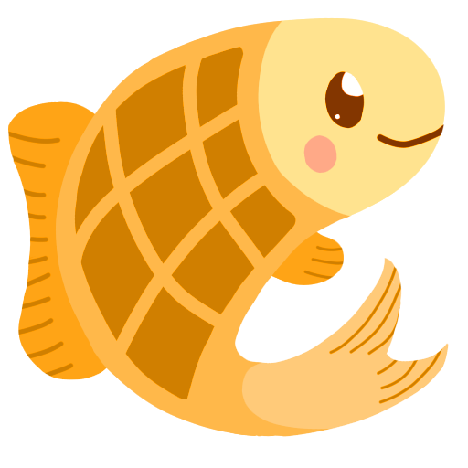

Software Engineer · C++ / C# / Unity
Hello! I'm Jhoshua Ampo
Lead developer of A Slice of Lunch, out now in Early Access on Steam. Software engineer working in C++, C#, and Unity, and a CS grad from CSU Fullerton.
Jul '25 – Oct '25
Sept '24 – Present
Out now in Steam Early Access
A cozy puzzle game: slice, rotate, and drag your food until your whole lunch fits in the lunch box.
A 2D rhythm game with 2 tracks and 4 inputs, made in 4 days for the Girly Game Jam (theme: Opposites Attract).
🏆 Runner-up, Quantum Game Jam
Guide a lost spaceship home across a map of quantum anomalies. Made in 1 week for the Quantum Game Jam (Quantum Realm Games × Indie Game Academy), whose goal was to make quantum behavior intuitive, using the alpha Quantum Forge Unity package.
A 3rd-person hack-and-slash roguelite where you play a Grim Reaper hunting down corruption. Defeat enemies, collect their processing power, and spend it on new special attacks. My senior capstone project at CSU Fullerton.
I'm a software engineer who loves building interactive things. Since 2024 I've led a team to launch A Slice of Lunch on Steam, refactored production code at Bobaface, and built 25+ game jam projects under tight deadlines. I like working close to the systems: input, physics, AI, and the tools that help teammates create content. I like breaking games as much as building them: playtesting, tracking down bugs, and writing specs clear enough that everyone knows what "done" looks like.
Open to full-time and contract roles in games, simulation, XR, and C++/Unity software engineering.
May '25